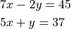
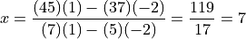
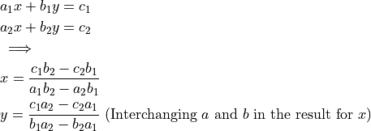

System of Equations in Two Variables¶
Consider a system of equations in two variables with a uniques solution

The solution for  can be written down directly as
can be written down directly as

We are using cross-multiplication and subtraction.
 can then be solved by substituting in any of the two equations.
can then be solved by substituting in any of the two equations.
In general, if a unique solution exists, then
